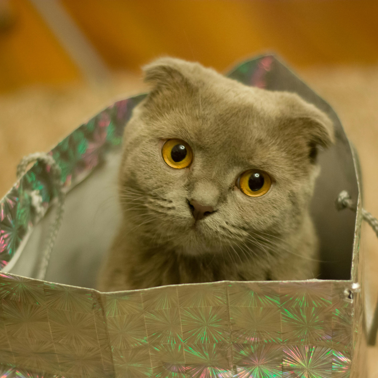

Understanding your cat’s body language is key to building a stronger bond with them, and their ears are one of the most expressive parts. Cat ears can rotate 180 degrees, and they use them to communicate a wide range of emotions. By learning to read their ear signals, you can better respond to their needs and avoid misunderstandings that could lead to scratches or bites. Let’s dive into the fascinating world of cat ear language and explore how you can become a true master of meow communication!
When your cat’s ears are upright, facing forward, and the cat is intently watching something, this is a sign that the cat is calm and interested in its surroundings. They might be observing birds outside the window, a toy moving, or even just listening to the sounds around them. This is a good time to interact positively with your cat, as they are feeling relaxed and curious. If you see this ear position, try engaging them with their favorite toy or give them gentle pets to reinforce the calm mood.
Flat ears, often referred to as “airplane ears,” are a clear indicator that your cat is feeling alert, annoyed, or even a bit aggressive. This position usually occurs when a cat is wary of something in its environment, like a loud noise, an unfamiliar person, or another animal encroaching on its space. It’s best to give your cat some space when you see this ear position and avoid touching them until they relax. Pushing for interaction at this moment could lead to growling, hissing, or a sudden swipe of the paw.
When your cat’s ears are pinned back against its head, it indicates that the cat is very frightened or feeling threatened. This is often seen in stressful situations, such as visits to the vet, encountering a larger animal, or experiencing loud and unfamiliar noises like fireworks. A cat with pinned-back ears is in a defensive mode, ready to flee or fight if necessary. In these moments, it’s important to provide a safe space for your cat to retreat to and avoid any sudden movements that could startle them further. Approaching a scared cat can damage their trust, so patience is key.
Cats have an incredible sense of hearing, and their ears often swivel back and forth to catch various sounds. If you notice your cat’s ears moving rapidly, they are likely scanning the environment for new noises, trying to locate the source. This behavior is typical in alert or cautious cats, especially in unfamiliar surroundings. Recognizing this can help you understand when your cat is on high alert, and it’s a good time to ensure they feel safe.
When both ears are perked up and pointed forward, your cat is highly stimulated, usually by something very intriguing. This can happen when they are hunting, playing, or exploring something new in their environment. This alert ear position shows they are fully engaged and ready to act. During playtime, this is the perfect moment to bring out interactive toys like feather wands or laser pointers to satisfy their hunting instincts.
Recognizing these ear signals is not just about avoiding scratches—it’s about respecting your cat’s space and responding to their emotional needs. Misunderstanding your cat’s ear language can lead to stress and anxiety for them, and possibly result in behavior problems. By learning to read these subtle cues, you can enhance your relationship, provide better care, and ensure a more harmonious household.
Observe the Context: Always consider the situation when interpreting ear positions. Combine ear signals with other body language, such as tail movements or vocalizations, for a complete understanding.
Approach Slowly: When in doubt, approach your cat slowly and watch for changes in their ears. If the ears suddenly flatten, give them space.
Respond to Calm Signals: Reward your cat when their ears are in a relaxed, upright position. This reinforces positive behavior and helps them feel secure.
Decoding your cat’s ear language is a rewarding journey that deepens the bond between you and your feline friend. By paying close attention to these ear signals, you’ll be able to respond more effectively to their needs and emotions, making your interactions more enjoyable for both of you. The next time you see your cat’s ears change position, you’ll know exactly what they’re feeling and how best to respond. Let’s continue to learn, observe, and grow as the ultimate meow language masters!
Want to gain a deeper understanding of dog behavior and how to care for them? Click the link below to read more related articles. read more related articles
Looking for products for your cat or dog? Check out the articles linked below for more information and recommendations. Explore more articles
Looking to transform your pet’s behavior or enhance your training skills? Discover our top recommended eBooks packed with expert tips and practical advice. Check out the links below for more details and to find the perfect guide for your pet training needs. Explore our eBooks